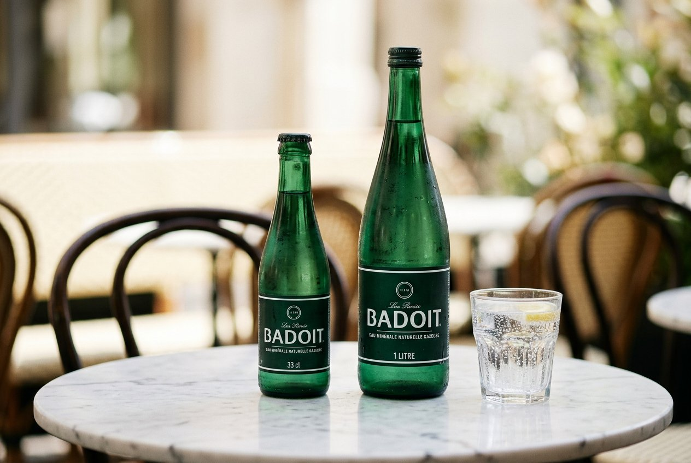
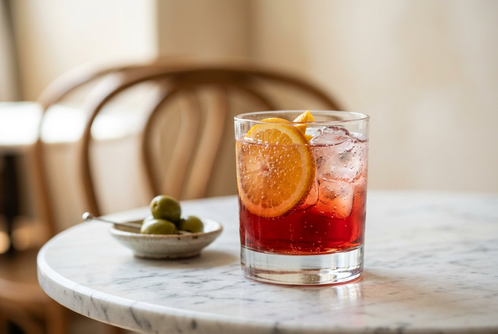
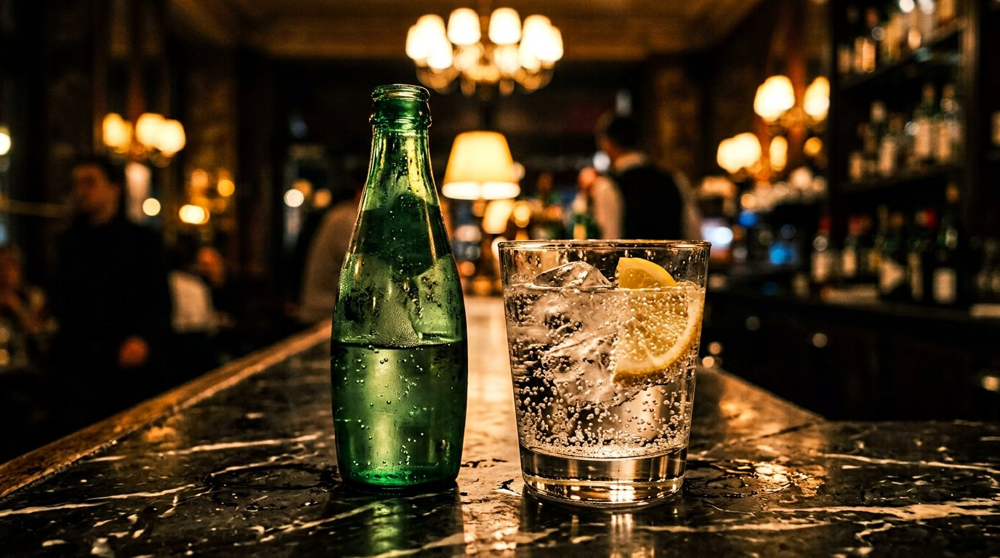
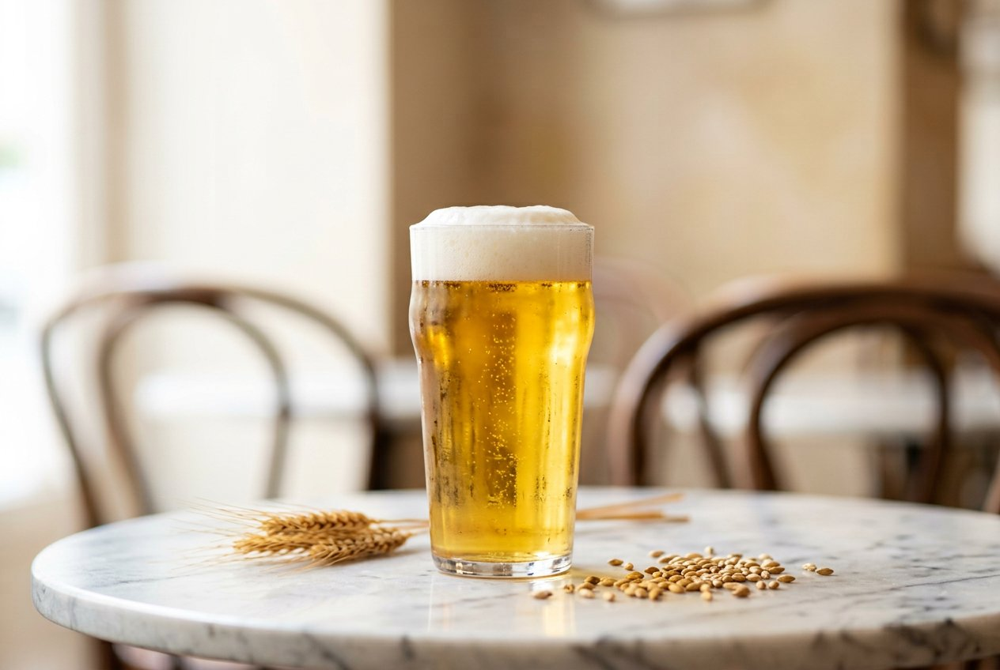
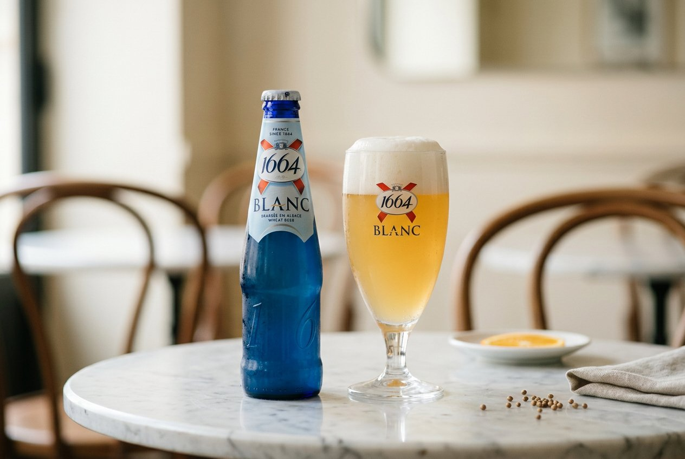
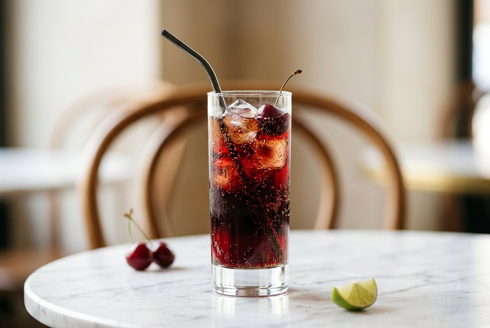
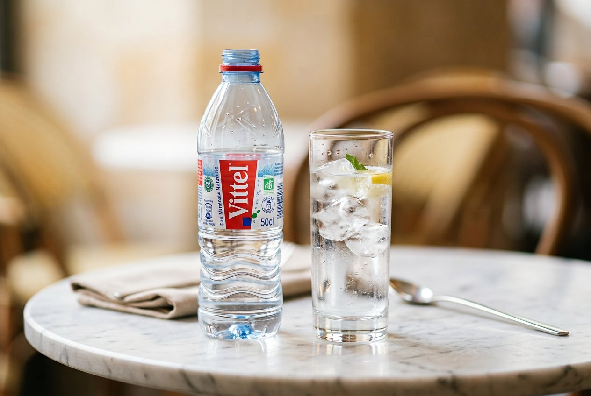
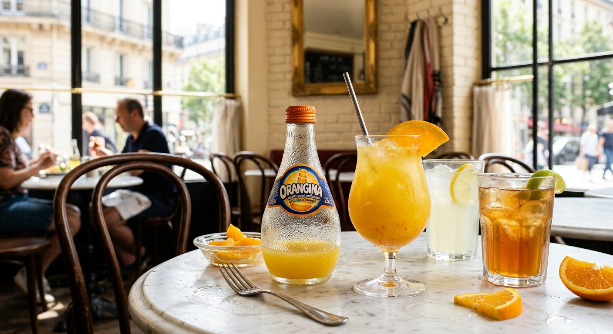

À gauche de chaque paire, le cadre d’origine en 4/3 : le sujet occupe le tiers droit, le reste est du décor. À droite, le recadrage appliqué — 3/2, vue calée sur le verre, agrandissement de 22 % (10 % pour les pressions, déjà centrées).







